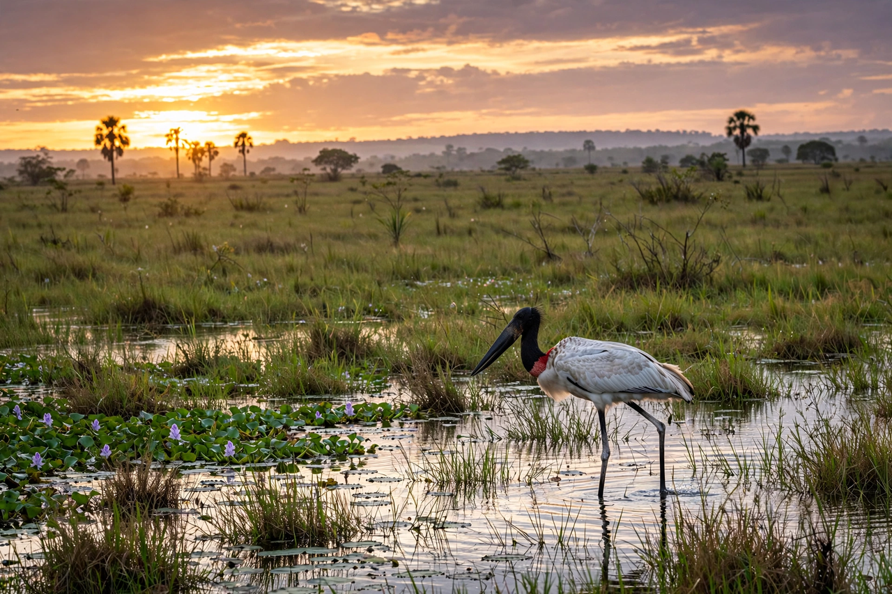

The Pantanal is a natural region encompassing the world's largest tropical wetland area, and the world's largest flooded grasslands. It is located mostly within the Brazilian states of Mato Grosso and Mato Grosso do Sul, extending into parts of Bolivia and Paraguay. The Pantanal covers an estimated 140,000–195,000 square kilometres, depending on the season, and floods seasonally as waters from the Paraguay River and its tributaries spread slowly across a nearly flat alluvial plain.
| Pantanal | |
|---|---|
 | |
| Countries | Brazil, Bolivia, Paraguay |
| Area | ~140,000–195,000 km² |
| Main river | Paraguay River |
| Status | UNESCO World Heritage Site (part), Ramsar site |
During the rainy season (roughly November to March), up to 80% of the Pantanal's floodplains are submerged, nurturing an extraordinarily dense and visible concentration of wildlife. The ecosystem supports hundreds of fish species, around 650 bird species (including the jabiru, hyacinth macaw, and toco toucan), giant otters, marsh deer, capybaras, caimans (notably the yacare caiman, numbering in the millions), anacondas, and the highest density of jaguars in the world. Unlike the dense Amazon rainforest, the Pantanal's open landscapes make wildlife comparatively easy to observe, making it one of the premier wildlife-watching destinations in the Americas.
Most of the Pantanal is privately owned and used for extensive cattle ranching on native pasture, a practice dating back centuries and broadly compatible with the flood cycle. Threats include upstream agriculture and siltation, hydroelectric dams altering river flows, mercury pollution from gold mining, navigation projects on the Paraguay River, and increasingly severe drought and wildfire — in 2020, exceptional fires burned roughly a third of the biome. Only a small fraction (under 5%) is strictly protected, including the Pantanal National Park and the Pantanal Matogrossense conservation complex.